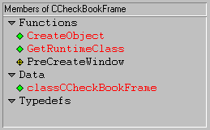
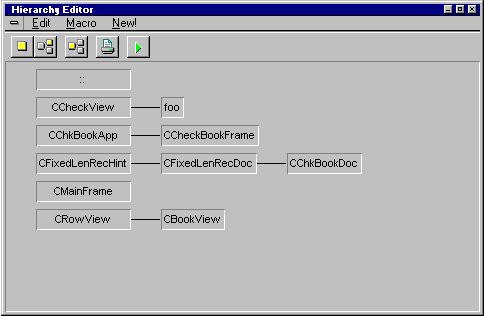
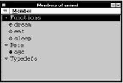

Home
| Search
| CTG
| RTL
| IDDE
| STL
Home
| Search
| CTG
| RTL
| IDDE
| STL
Last update Fri Apr 28 16:30:16 2006
|
Reference 1. Introducing Digital Mars C++ 2. Introducing the IDDE Part 2: Creating an Application with Digital Mars C++ 3. Starting a Project and Defining Workspaces 4. Generating an Application Framework 5. Defining Classes and Their Hierarchies 6. Editing Program Code 7. Adding Look and Feel with Resources 8. Testing an Application Part 3: Learning Digital Mars C++ by Example 9. Introduction to the Tutorial 10. Lesson 1: Create the DOS Application 11. Lesson 2: Generate an Application Framework 12. Lesson 3: Customize the Interface 13. Lesson 4: Add Messages with ClassExpress 14. Lesson 5: Add a Dialog Box with ClassExpress Part 4: More about Creating Programs 15. More about Projects and Workspaces 16. More about Project Build Settings 17. More about AppExpress 18. More about ClassExpress 19. Class Editor Reference 20. Hierarchy Editor Reference 21. Text Editor Reference 22. Using Version Control Part 5: More about Testing Programs 23. Controlling and Configuring the Debugger 24. Commands Available in Debugging Mode Part 6: About Managing Resources 25. ResourceStudio Resource Editor 26. Dialog Editor 27. Menu, Accelerator and String Table Editors 28. Bitmap, Cursor, Icon, and Font Editors 29. Version Information and Custom Resource Editors Part 7: Appendixes A. Expression Evaluation B. IDDE Settings and Command-Line Options C. Using NetBuild |
5. Defining Classes and Their HierarchiesOnce you have produced an application framework, customize the application by adding your own classes and functions. The two tools designed specifically for object-programming are the Class Editor and the Hierarchy Editor. They simplify the design and maintenance of C++ projects by working directly with the project's class hierarchy and members. The editors themselves take care of many of the mundane details of file-oriented program development, such as opening and closing files and locating source code for particular member functions.These tools are suited for developing a class hierarchy from scratch, for adding classes to an application framework generated with AppExpress, and for browsing and editing pre-existing class hierarchies. They are especially useful for understanding the architecture of unfamiliar source code. The Class and Hierarchy Editors can perform the same operations on classes and hierarchies; they differ only in their interface. The Class Editor's interface emphasizes member editing; the Hierarchy Editor's interface, through its graphical display, emphasizes inheritance relationships. Use one or the other, or both simultaneously, according to preference. This chapter describes basic operations that may be performed with the Class and Hierarchy Editors. For a complete reference on these two tools, see Chapter 19, "Class Editor Reference", and Chapter 20, "Hierarchy Editor Reference". Parsing and BrowsingThe Class and Hierarchy editors are C++ class browsers. These tools let you work with your source code in an object-oriented manner, rather than in the traditional file-oriented manner. The Class and Hierarchy Editors present you with a list of classes in your project, allow you to view the members of each class, and let you edit the member declarations and definitions directly, without performing the overhead of opening and closing files and locating source code for particular members. Changes made to classes or inheritance relationships in the Class or Hierarchy Editors are automatically changed in the underlying source code.To present you with a list of classes and members, the IDDE must parse the source code. By default, this is done automatically. When the IDDE detects that source code or project settings have changed since the last parse, it reparses the necessary files. If errors are encountered during parsing, messages are displayed in the Output window. You can double-click on the error message to open for editing the appropriate file at the point at which the error was detected. How the class browsers expand macrosThe parser used by the Class and Hierarchy Editors contains a fully functional C preprocessor. One significant difference between this parser and the Digital Mars C compiler is the way the parser expands macros.The parser treats an entire project as one "database" of code. Consequently, preprocessor macros defined in any header will expand in any subsequently parsed file. This can produce unexpected errors. For example:
// foo1.h ------------------------------------
#define pBar (pIndirect->pBar)
// . . .
// foo1.cpp ----------------------------------
#include <foo1.h>
// foo2.cpp ----------------------------------
struct A
{ int *pBar; // ERROR! Expands to: int *
(pIndirect-> pBar);
};
To avoid errors of this type, undefine the macro at the top of the file
where the error occurs (foo2.cpp).
Browsing library source codeIf browsing source code that is based on MFC or some other large class library, it is convenient to turn off the display of library classes. To do so:
Class EditorThe Class Editor provides a list-based view of the class hierarchy. From within the Class Editor add classes, modify inheritance relationships, and view and edit class member declarations and definitions.To open a Class Editor window, do one of:
[Figure 5-1 Class Editor window] The Class Editor window contains a standard menu bar and toolbar; pop-up menus are available in each pane. You can set options for the grouping, sorting, and display of classes and members in the Classes and Members panes in the Editing/ Browsing Settings dialog box. For a complete reference on Class Editor menus and options, see Chapter 19, "Class Editor Reference". You can change the relative sizes of panes in the Class Editor window by first positioning the cursor over the line separating the panes. The cursor changes to a two-headed arrow. Press the left mouse button and drag the separator to the desired location. To select a class in the Classes pane, click on it. Additional classes may be selected by holding down the Control key and clicking. By default, classes are displayed hierarchically, with derived classes below and indented relative to their bases. Classes with multiple bases are displayed beneath each of the bases. Triangular buttons to the left of base classes can be used to collapse and expand branches of the hierarchy. You can set an option to display classes alphabetically in the Editing/ Browsing Settings dialog box. By default, class members in the Members pane are grouped into Functions, Data, and Typedefs. The tree structure can be expanded or collapsed by clicking on the triangular buttons to the left of the category names. To select a class member, click on it. Additional members can be selected by clicking while holding down the Control key. You can display a member declaration or definition in the Source pane by double-clicking on the member name. Creating classesYou can create a class hierarchy consisting of new classes related to other classes by inheritance (derived or sibling classes), or create new top-level classes not related to any other class.Creating a top-level classTo create a new class hierarchy, first create a top-level class to serve as a base for the hierarchy.To create a new top-level class:
Creating a derived classAfter a base class exists, you may create derived classes— specialized versions of the base class.To create a new derived class:
Creating a sibling classYou may also create a new derived class as a "sibling" to an existing class. Siblings have the same base class with the same access specifiers.To create a new sibling class:
Editing inheritance relationshipsAs your application evolves, you may want to restructure your class hierarchy. The Class Editor lets you add and delete connections between classes, as well as change the inheritance attributes.When altering inheritance relationships, the Class and Hierarchy Editors change only the class declarations. In particular, they do not change references to base classes and their members in a derived class's constructors or functions. If such references exist, you must change them manually in the source file. Connecting to a base classYou can connect a class to a base class to make it a derived class of this base.To make one existing class derive from another existing class:
Deleting a connectionYou can also disconnect a derived class from a base class.To delete an inheritance relationship:
Editing inheritance attributesYou can change a derived class's base class access specifier and virtual inheritance flag.To edit the base class access specifier:
Working with class membersAfter creating a class, you can implement its functionality through member data and functions. You may add, delete, and edit class members through the Members pane and Source panes.A list of the members of the currently selected class is shown in the Members pane (Figure 5-5). By default, the member list is sorted into three categories: Data, Functions, and Typedefs. Within each category, items are sorted alphabetically. The colored diamond in front of each member identifies the access as public (green), protected (yellow), or private (red). Names of members defined as macros appear in red. Note: Members that appear in red are not syntactically verified before source changes are saved back to the file. The lists following each category header can be collapsed or expanded by clicking on the triangular button to the left of the category name.  [Figure 5-5 Members pane of Class Editor] Adding a class memberThe first step in class implementation is to declare the data members and member functions.To add a class member:
By default, the first eight letters of the class name are used to derive the source filename for new functions. You may change the file name by entering an alternative name in the Source File textbox of the Add Member dialog box. Deleting a class memberUnneeded class members are easily removed.To delete a class member:
Changing member attributesAs your class and hierarchy evolve, you may decide to change certain member attributes. For example, you may want to make a function virtual, or data private.To change a member's access and storage specifiers:
If you are editing several members' attributes simultaneously and the access specifiers are not identical, a Don't Change option is displayed in the Access group box. Likewise, if the storage specifiers are not identical, a Don't Change option is displayed in the Storage group box. These options let you change other member attributes without affecting the original access or storage of each member. You may, however, select a particular access or storage specifier, and all members are given that attribute. Also, when you are editing several members' attributes, if the inline attributes are not the same, the Inline check box changes to allow three states (checked, unchecked, and grayed, indicating "Do not change") instead of the normal two-state options. Viewing and editing member sourceAfter declaring your class members, you can extend your functions by editing the function definitions in the Source pane. You also can change data member types, array dimensions, and so on.To view and edit member declarations and function definitions:
Note: If you close the current project before you save a source file you've modified with the Class Editor, you cannot discard the changes or close the file until you reopen the project. Viewing and editing source filesAt times it is useful to view and edit the entire file containing the class declaration or the class's functions. It is necessary, for example, to add the appropriate #include statements to the source files before compiling.To view and edit the header file containing the class declaration:
To view and edit the source file containing member function definitions:
Hierarchy EditorThe Hierarchy Editor provides a graphical view of the class hierarchy. From within the Hierarchy Editor, you may add classes, modify inheritance relationships, and view and edit class member declarations and definitions. With its graphical view of class relationships, the Hierarchy Editor is an especially useful tool when examining unfamiliar source code for the first time.To open a Hierarchy Editor window, do one of the following:
To enable the Hierarchy Editor child windows:
 [Figure 5-8 Hierarchy Editor window] Unlike the Members and Source panes of the Class Editor, Hierarchy Editor windows are independent. They have their own menus and may be positioned, sized, and closed separately. Otherwise, they behave as do the corresponding panes of the Class Editor. For a complete reference on Hierarchy Editor menus and options, see Chapter 20, "Hierarchy Editor Reference". Creating classesA class hierarchy consists of a number of classes connected by inheritance relationships. You can create new classes related to other classes by inheritance (derived or sibling classes) or new top-level classes not related to any other class.Operations relating to class creation and the establishment of hierarchical relationships are carried out in the Hierarchy Editor's graphical display window. Creating a top-level classTo create a new class hierarchy, first create a top-level class to serve as a base for the hierarchy.To create a new top-level class:
Creating a derived classAfter a base class exists, you may add a specialized version of that class to the hierarchy by creating a derived class.To create a new derived class:
Creating a sibling classYou may also create a new derived class as a "sibling" to an existing class. Sibling classes have the same base class with the same access specifiers.To create a new sibling class:
Editing inheritance relationshipsAs your application evolves, you may want to restructure your class hierarchy. You can add and delete connections between classes, as well as change the inheritance attributes.In altering inheritance relationships, Class and Hierarchy Editors change only the class declarations, not references to base classes and their members in a derived class's constructors or functions. If such references exist, you must change them manually. Connecting to a base classYou can connect a class to a base class, to make the former a derived class of the latter.To make an existing class a base of another existing class:
Deleting a connectionJust as you can connect a class to a base class, you also can disconnect a derived class from a base class.To delete an inheritance relationship:
Changing base classYou can move a base class connection to change the base of a derived class.To change a class's base class:
Editing inheritance attributesYou can change a derived class's base class access specifier and virtual inheritance flag.To edit the base class access specifier:
Working with class membersAfter creating a class, you can implement its functionality through member data and functions. You may add, delete, and edit class members through the Members and Source child windows.A list of members of the currently selected class is displayed in the Members child window (Figure 5-14). By default, the member list is sorted into three categories: Data, Functions, and Typedefs. Within each of these categories, items are sorted alphabetically. The colored diamond in front of each member identifies the access as public (green), protected (yellow), or private (red). Lists following each category header can be collapsed or expanded by clicking on the triangular button to the left of the category name.  [Figure 5-14 Members child window] Adding a class memberThe first step in class implementation is to declare the data and function members.To add a class member:
By default, the first eight letters of the class name are used to derive the source file name for new functions. You can change the file name by entering an alternative name in the Source File textbox of the Add Member dialog box. Deleting a class memberUnneeded class members are easily removed.To delete a class member:
Changing member attributesAs your class and hierarchy evolve, you may need to change certain member attributes. For example, you may want to make a function virtual, or data private.To change a member's access and storage specifiers:
The class declaration in the header file is modified and the Members display is updated to reflect the changes. Viewing and editing member sourceAfter declaring your class members, you can extend your functions by editing the function definition in the Source child window. Also, you can change data member types, array dimensions, and so on.To view and edit member declarations and function definitions:
Viewing and editing source filesAt times it is useful to view and edit the entire file containing the class declaration or the class's functions.To view and edit the header file containing the class declaration:
|